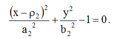
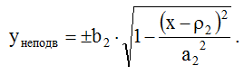
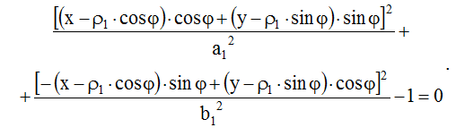
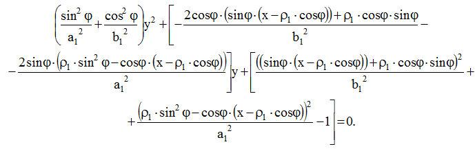
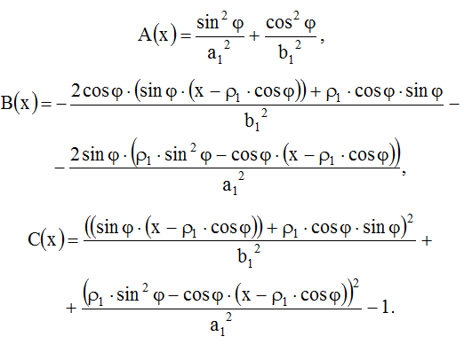
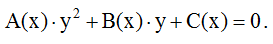
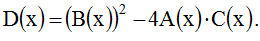
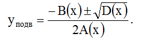
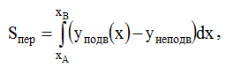

Рассматривали схему перекрытия отверстий овальной формы двух поворотных пластин универсального компенсатора
погрешностей направления ползуна (рис. 1.18).
Задавали следующие конструктивные параметры компенсатора:
p1 – расстояние от оси вращения до центра отверстия верхней пластины;
p2 – расстояние от оси вращения до центра отверстия нижней пластины;
φ – угол между лучами, идущими из общего начала в центры отверстий пластин;
a1 и b1 – радиусы меньшего отверстия пластины;
a2 и b2 – радиус большего отверстия платины.
Запишем уравнение нижнего (неподвижного) эллипса:
Из уравнения выше выразим у:
Запишем уравнение верхнего (подвижного) эллипса:
Преобразуем выражение (1.13), выделив коэффициенты при степенях «у»:
Обозначим выражения перед степенями «y» через A(x), B(x), C(x):
Подставив выражения (1.15)-(1.17) в выражение (1.14), получим квадратное уравнение относительно y:
Найдем дискриминант уравнения (1.18):
Тогда корни уравнения запишем в виде:
Корни уравнения y(x) = yподв - yнеподв = 0 находили методом перебора. В результате получали точки пересечения эллипсов (xA, yA) и (xB, yB). Площадь пересечения овальных отверстий определяли как:
при этом величину определенного интеграла рассчитывали с использованием численных методов (например, методом трапеций).
Коэффициент перекрытия определяли как: